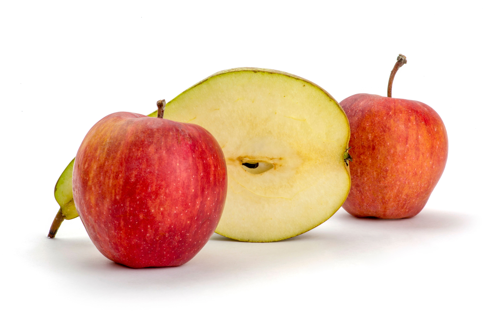
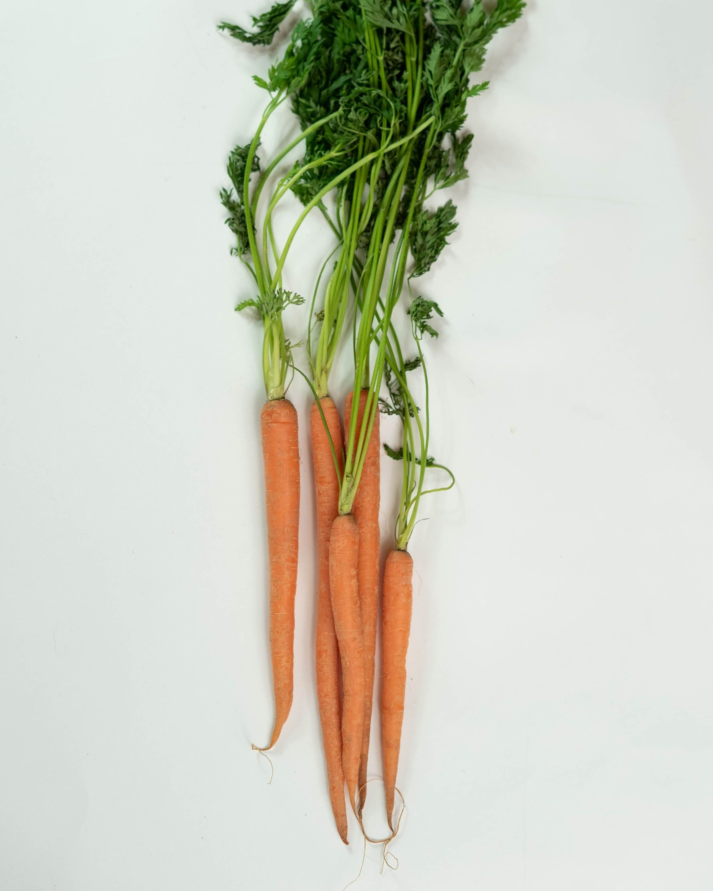
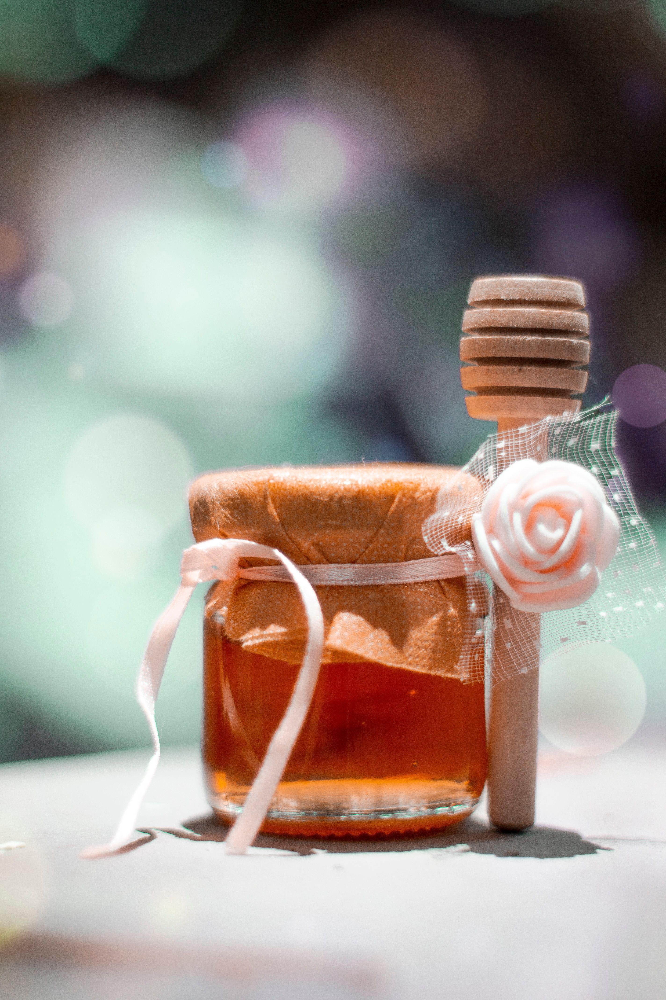

Frutas Frescas
Manzanas Fuji
Manzanas crujientes y dulces del Valle del Maule, de textura firme y sabor equilibrado entre dulce y ácido.
$1.200 por kilo
HuertoHogar · Del campo a tu hogar
Llevamos productos frescos y de calidad desde el campo hasta los hogares de Chile.
Con más de 6 años de experiencia, acercamos a los consumidores y agricultores locales, promoviendo una alimentación saludable y prácticas sostenibles.
Ver productos
Conoce una selección de nuestras frutas, verduras y productos orgánicos.

Frutas Frescas
Manzanas crujientes y dulces del Valle del Maule, de textura firme y sabor equilibrado entre dulce y ácido.
$1.200 por kilo

Verduras Orgánicas
Zanahorias de la Región de O'Higgins, cultivadas sin pesticidas y fuente de vitamina A y fibra.
$900 por kilo

Productos Orgánicos
Miel pura y orgánica producida por apicultores locales.
$5.000 por frasco de 500 g